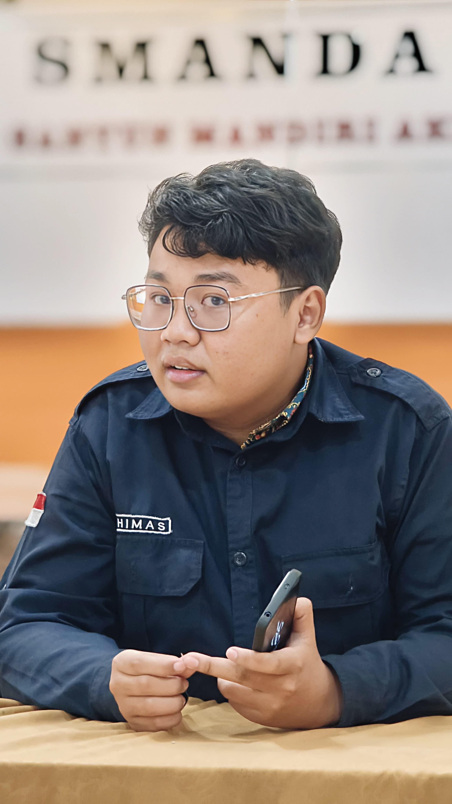

About Me

Saya adalah mahasiswa S1 Informatika di Universitas Sebelas Maret (UNS) dengan minat dan pengalaman di bidang kepemimpinan, videografi, dan fotografi.
Sebagian besar pengalaman saya berasal dari berkolaborasi serta bekerja sama dengan orang lain di SMA Negeri 2 Sragen. Sebagai Ketua Compact Multimedia, saya mengoordinasi lebih dari 30 anggota dan bermitra dengan OSIS Astrawiguna, Rohis, PMR, serta tim Humas sekolah, sehingga acara-acara sekolah dapat didokumentasikan dan dibagikan melalui Warta Smanda. Saya juga mengoordinasi tim podcast sekolah selama lebih dari dua tahun dan mengelola desain serta media digital untuk Rohis.
Pengalaman-pengalaman itu mengajarkan saya bahwa kolaborasi bergantung pada komunikasi, tujuan bersama, dan cara berpikir kreatif. Dalam Informatika, berpikir kreatif berarti melihat masalah dari sudut pandang pengguna, menjajaki lebih dari satu solusi, dan mewujudkan ide terbaik menjadi sesuatu yang benar-benar berfungsi. Saat ini saya sedang membangun sekaligus memperdalam keahlian di bidang Software Development dan Web Development untuk menerapkan pola pikir ini, dan menciptakan teknologi yang fungsional, dipikirkan dengan matang, dan dibuat untuk orang-orang yang menggunakannya.
Website ini digunakan untuk portofolio saya ke depan.